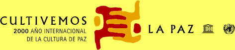

| Manifiesto 2000 para
una cultura de paz y no violencia |
|
| orque el año 2000 debe
ser un nuevo comienzo para todos nosotros. Juntos podemos transformar la cultura de guerra
y de violencia en una cultura de paz y de no violencia. |
|
| orque esta
evolución exige la participación de cada uno de nosotros y ofrece a los jóvenes y a las
generaciones futuras valores que les ayuden a forjar un mundo más justo, más solidario,
más libre, digno y armonioso, y con mejor prosperidad para todos. |
|
| orque la cultura de paz
hace posible el desarrollo duradero, la protección del medio ambiente y la satisfacción
personal de cada ser humano. |
|
| orque soy conciente de mi
parte de responsabilidad ante el futuro de la humanidad, especialmente para los niños de
hoy y de mañana. |
Me comprometo
en mi vida cotidiana, en mi familia, mi trabajo,
mi comunidad, mi país y mi región a:
|
respetar la vida y la dignidad de cada persona, sin discriminación
ni prejuicios; |
|
|
|
practicar la no violencia activa, rechazando la violencia en todas
sus formas: física, sexual, sicológica, económica y social, en particular hacia los
más débiles y vulnerables, como los niños y los adolescentes; |
|
|
|
compartir
mi tiempo y mis recursos materiales, cultivando la generosidad a fin de terminar con
la exclusión, la injusticia y la opresión política y económica; |
|
|
|
defender
la libertad de expresión y la diversidad cultural , privilegiando siempre la escucha
y el diálogo, sin ceder al fanatismo, ni a la maledicencia y el rechazo del prójimo; |
|
|
|
promover un consumo responsable y un modo de desarrollo que tenga en
cuenta la importancia de todas las formas de vida y el equilibrio de los recursos
naturales del planeta; |
|
|
|
contribuir
al desarrollo de mi comunidad, propiciando la plena participación de las mujeres y el
respeto de los principios democráticos, con el fin de crear juntos nuevas formas de
solidaridad. |
 |